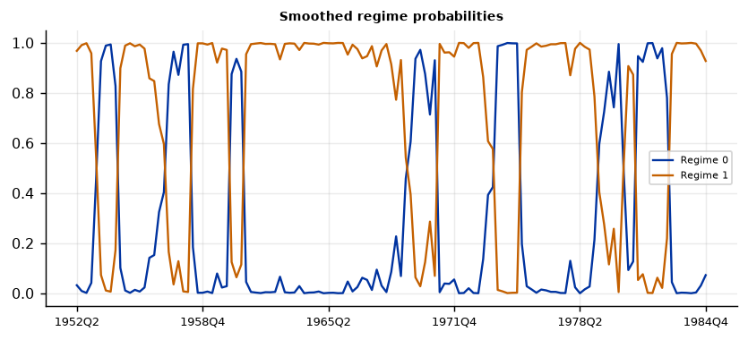
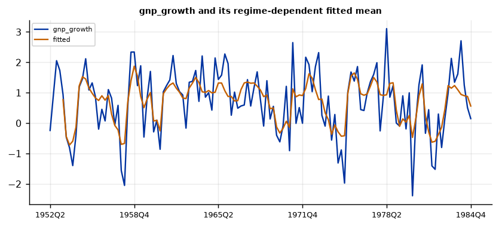

Run this model on your own data in Open Econometric Systems →
Step 1The question and the model
Are there recessions in the data, and can the data find them without being told? In a Markov-switching autoregression (Hamilton 1989) the mean of the series depends on an unobserved state \(s_t\):
and the state follows a first-order Markov chain with transition probabilities \(p_{ij} = \Pr(s_t = j \mid s_{t-1} = i)\). The model is estimated by maximum likelihood with the Hamilton filter. For each period it gives a filtered probability (using data up to \(t\)) and a smoothed probability (using the whole sample) of being in each state.
Three checks before you trust a regime model
- Is the series stationary? The regimes should describe shifts in the mean of a stationary series. A trending series produces "regimes" that are just the trend.
- Does the data need two regimes? Compare one, two and three regimes with information criteria, and run the linearity test. A regime model fits better than a linear one by construction; the question is whether it fits enough better.
- Are the regimes sharply identified? A good model puts each period in one regime with high probability. The regime classification measure (RCM, Ang and Bekaert 2002) summarises this.
How to write it: the model
We estimate Hamilton's (1989) Markov-switching autoregression for quarterly GNP growth, with a state-dependent mean, a common variance and four autoregressive lags. The state follows a two-state first-order Markov chain. We estimate the model by maximum likelihood using the Hamilton filter and report smoothed state probabilities (Kim 1994). To compare the number of regimes we use AIC and BIC, and we test linearity with the likelihood-ratio statistic and the critical values of Garcia (1998) and the bound of Davies (1987), because the standard asymptotic distribution does not apply when parameters are unidentified under the null.
Step 2Load the data and test for unit roots
import numpy as np
import pandas as pd
import oes_engine as oes # pip install -e open-econometric-systems/oes-engine
data = open("hamilton_gnp.csv").read()
df = pd.read_csv("hamilton_gnp.csv")
print(df.describe().round(2).loc[["count", "mean", "std", "min", "max"]])
spec = dict(y="gnp_growth", time="date", order=4, regimes=2, reference="nber_recession")
r = oes.run("ms_ar", data, spec)
oes.show(r, "Unit-root") gnp_growth nber_recession
count 135.00 135.0
mean 0.74 0.2
std 1.07 0.4
min -2.39 0.0
max 3.11 1.0
Unit-root tests
ADF level, constant: p ADF level, trend: p ADF first difference: p KPSS level: p Conclusion
Variable
dependent variable 0.0 0.0 0.0 0.1 I(0)
Note: ADF H0: unit root; KPSS H0: stationary (p-values are truncated at 0.01 and 0.10). For a Minnesota-type prior use a prior mean of 1 on the own first lag for I(1) variables in levels (random walk) and 0 for stationary variables. A VAR in levels with a random-walk prior remains valid when the variables are I(1) or cointegrated (Sims, Stock and Watson 1990).How to read it
Quarterly GNP growth is stationary: the ADF tests reject a unit root and the KPSS test does not reject stationarity. That is what a regime-in-the-mean model needs. If your series is in levels and trending, difference it (growth rates) first.
Step 3How many regimes? Is the series linear?
oes.show(r, "Number of regimes")
oes.show(r, "Linearity")Number of regimes: information criteria
Log-likelihood AIC BIC HQIC
Regimes
1 -183.669 379.338 396.589 386.348
2 -181.263 380.527 406.404 391.042
3 -179.184 386.368 426.621 402.725
Note: Regimes = 1 is the linear model. Under the null of no switching some parameters are unidentified, so a standard LR test is not valid (Hansen 1992; Garcia 1998): compare models with the criteria and with the economic meaning of the regimes.
Linearity: likelihood-ratio statistic
Value
Statistic
LR = 2 (logL switching - logL linear) 4.812
Garcia (1998) 5% critical value, two-regime models (approximate) about 14
Davies upper-bound p-value 0.9501
Note: A large LR (well above the Garcia critical value) rejects the linear model.How to read it
One regime has the lowest AIC (379.3) and BIC (396.6); two regimes give 380.5 and 406.4, three give 386.4 and 426.6. The information criteria do not prefer a switching model for this sample. The linearity test agrees: the statistic is 4.8, far below the Garcia 5% critical value of about 14, and the Davies bound gives p = 0.95. So the data do not reject a linear AR model. This is an honest and well-known result for Hamilton's sample: with 131 quarters, the evidence for regimes is weak when judged by the likelihood alone. The regimes are still useful as a description, because they line up with the NBER dates (Step 5), but you should not claim that the test proves two regimes. Report this table.
Step 4Estimate
oes.show(r, "Parameter estimates")
oes.show(r, "Transition")
oes.show(r, "Regimes")
oes.show(r, "Regime classification")Parameter estimates
Estimate Std. err. z p-value
Parameter
p[0->0] 0.7547 0.0965 7.8186 0.0000
p[1->0] 0.0959 0.0377 2.5417 0.0110
const[0] -0.3588 0.2645 -1.3563 0.1750
const[1] 1.1635 0.0745 15.6144 0.0000
sigma2 0.5914 0.1026 5.7614 0.0000
ar.L1 0.0135 0.1200 0.1123 0.9106
ar.L2 -0.0575 0.1377 -0.4179 0.6760
ar.L3 -0.2470 0.1069 -2.3103 0.0209
ar.L4 -0.2129 0.1105 -1.9264 0.0540
Note: p[i->j] is the probability of moving from regime i to regime j; [r] marks a regime-specific parameter.
Transition probabilities (row: from, column: to)
Regime 0 Regime 1
From
Regime 0 0.7547 0.2453
Regime 1 0.0959 0.9041
Regimes
Expected duration (periods) Share of periods (smoothed prob. > 0.5) Mean of gnp_growth in the regime
Regime
Regime 0 4.076 0.275 -0.4157
Regime 1 10.426 0.725 1.1501
Regime classification
Value
Measure
Regime classification measure, RCM (Ang and Bekaert 2002) 21.67
Note: RCM = 0: every period is assigned to a regime with certainty; RCM = 100: no information. Below about 30 is a sharp classification.How to read it
Regime 1 is the high-growth state: the mean growth is 1.15% per quarter (about 4.6% a year) and it lasts 10.4 quarters on average. Regime 0 is the low-growth state: the mean is \(-0.42\)% per quarter, it lasts 4.1 quarters on average, and the state occupies 27.5% of the sample. The transition probabilities are \(p_{00} = 0.75\) and \(p_{11} = 0.90\); the expected duration of a regime is \(1/(1-p_{ii})\). The low-growth mean is imprecise (\(z = -1.4\), p = 0.18) while the high-growth mean is very precisely estimated (\(z = 15.6\)): the recession state has few observations. The estimate \(p_{10} = 0.096\) is significant (p = 0.011), so a move from expansion to the low state is likely about once in ten quarters. Only the third lag of growth is significant at 5% (\(-0.25\)). The RCM is 21.7, below the usual threshold of 30, so the periods are assigned to regimes fairly sharply.
Step 5Regime dates and the NBER recession dates
oes.show(r, "Regime dating")
oes.show(r, "Comparison")
oes.plot(r, "Smoothed regime probabilities", ncols=1, size=(6.5, 3))
oes.plot(r, "gnp_growth and its regime-dependent fitted mean", ncols=1, size=(6.5, 3))Regime dating (most likely regime, consecutive periods)
From To Periods Average probability
Regime
Regime 1 1952Q2 1953Q2 5 0.891
Regime 0 1953Q3 1954Q2 4 0.934
Regime 1 1954Q3 1956Q4 10 0.882
Regime 0 1957Q1 1958Q1 5 0.932
Regime 1 1958Q2 1960Q1 8 0.959
Regime 0 1960Q2 1960Q4 3 0.899
Regime 1 1961Q1 1969Q2 34 0.960
Regime 0 1969Q3 1970Q4 6 0.839
Regime 1 1971Q1 1973Q4 12 0.907
Regime 0 1974Q1 1975Q1 5 0.995
Regime 1 1975Q2 1979Q1 16 0.957
Regime 0 1979Q2 1980Q3 6 0.742
Regime 1 1980Q4 1981Q1 2 0.890
Regime 0 1981Q2 1982Q4 7 0.938
Regime 1 1983Q1 1984Q4 8 0.981
Comparison with nber_recession (regime 0)
Value
Measure
Concordance (share of periods classified alike) 0.916
Reference periods detected 0.963
False signals (share of non-reference periods) 0.096

How to read it
The low-growth regime is dated 1953Q3–1954Q2, 1957Q1–1958Q1, 1960Q2–1960Q4, 1969Q3–1970Q4, 1974Q1–1975Q1, 1979Q2–1980Q3 and 1981Q2–1982Q4, mostly with an average probability above 0.9. These are the post-war US recessions. Against the NBER recession indicator, 91.6% of quarters are classified alike, 96.3% of NBER recession quarters are detected, and 9.6% of non-recession quarters are flagged as low growth (false signals). The model finds the recessions without being told where they are. The dated episodes also include 1969Q3–1970Q4 and 1979Q2–1980Q3, which overlap the NBER recessions of 1969–70 and 1980. When you write this up, say which dates you compare with and how you define "detected" and "false signal".
Step 6Diagnostics
oes.show(r, "Residual diagnostics")Residual diagnostics (observed minus regime-weighted fit)
Statistic p-value Detail
Test
Portmanteau (Hosking), 12 lags 12.3576 0.4174 df = 12; H0: no residual autocorrelation (approximate after estimating lags)
Ljung-Box, residual 12.5540 0.4023 H0: no autocorrelation
Jarque-Bera, residual 3.3402 0.1882 H0: normal residuals
ARCH LM, residual 1.3403 0.8545 H0: no conditional heteroskedasticityHow to read it
The residuals pass: no autocorrelation (Ljung-Box p = 0.40; Hosking portmanteau p = 0.42), no sign of non-normality (Jarque-Bera p = 0.19) and no ARCH effects (p = 0.85). The model that allows only the mean to switch is adequate for the series' dynamics. If the ARCH test rejected, you would let the variance switch too (Step 7).
Step 7Robustness: lags, switching variance, switching dynamics and regimes
def summary(res):
s = {x["label"]: x["value"] for x in res["summary"]}
t = [t for t in res["tables"] if t["title"].startswith("Comparison")]
c = oes.frame(t[0])["Value"].tolist() if t else [np.nan] * 3
return [s["Log-likelihood"], s["BIC"]] + c
variants = {"baseline": {}, "AR(2)": dict(order=2), "AR(1)": dict(order=1),
"switching variance": dict(switching_variance="yes"),
"switching AR coefficients": dict(switching_ar="yes"), "3 regimes": dict(regimes=3)}
tab = {k: summary(oes.run("ms_ar", data, dict(spec, **v))) for k, v in variants.items()}
print(pd.DataFrame(tab, index=["log-lik", "BIC", "concordance", "recessions detected", "false signals"]).T.round(3))log-lik BIC concordance recessions detected false signals baseline -181.263 406.404 0.916 0.963 0.096 AR(2) -185.668 405.568 0.910 0.556 0.000 AR(1) -187.081 403.550 0.903 0.519 0.000 switching variance -180.677 410.107 0.855 0.963 0.173 switching AR coefficients -176.251 415.879 0.740 0.667 0.240 3 regimes -177.016 422.286 0.847 0.259 0.000
How to read it
The lag order matters a great deal for the dating. With four lags (Hamilton's choice) the model detects 96% of NBER recession quarters; with two lags it detects 56% and with one lag 52%, though concordance stays above 90% because most quarters are expansions. The shorter models put the low state on fewer quarters, so a claim like "the model finds the recessions" holds for the four-lag specification only. Allowing the variance to switch keeps the detection rate (96%) but raises false signals to 17% and worsens the BIC (410.1 against 406.4). Allowing the autoregressive coefficients to switch raises the log-likelihood to \(-176.3\) but the BIC is 415.9 and only 67% of recession quarters are detected. A third regime improves the log-likelihood to \(-177.0\) but the BIC is 422.3 and one of the three regimes is a single quarter. The baseline is the best on the information criteria among the switching models.
Step 8Write the results
How to write it: results
The two-regime model separates a high-growth state (mean 1.15% per quarter, expected duration 10.4 quarters) from a low-growth state (mean \(-0.42\)% per quarter, expected duration 4.1 quarters). The transition probabilities are 0.75 for staying in the low state and 0.90 for staying in the high state. The smoothed probabilities date seven low-growth episodes between 1953 and 1982 that correspond to the post-war US recessions: 91.6% of quarters are classified in agreement with the NBER indicator, 96.3% of NBER recession quarters are detected and 9.6% of other quarters are flagged. The regime classification measure is 21.7, which indicates a sharp classification. However, the likelihood evidence for two regimes is weak: one regime has the lowest AIC and BIC, and the linearity statistic (4.8) is below the Garcia 5% critical value (about 14; Davies p = 0.95). The regime estimates are therefore best read as a description of the cycle that agrees with the NBER dates, not as a rejection of a linear model. The dating depends on the lag order: with two or fewer lags only about half of the NBER recession quarters are detected.
| Report | What | Where |
|---|---|---|
| Model | Series, lags, regimes, what switches, estimation method | Step 1 |
| Data | Unit-root tests | Step 2 |
| Regimes | AIC, BIC, linearity statistic and its critical value | Step 3 |
| Estimates | Regime means, transition probabilities, durations, RCM | Step 4 |
| Dates | Regime dates, comparison with NBER dates, figures | Step 5 |
| Diagnostics | Residual tests | Step 6 |
| Robustness | Lags, switching variance and dynamics, number of regimes | Step 7 |
References. Hamilton (1989), Econometrica; Kim (1994), Journal of Econometrics; Garcia (1998), International Economic Review; Davies (1987), Biometrika; Hansen (1992), Journal of Applied Econometrics; Ang and Bekaert (2002), Review of Financial Studies; Hamilton (2016), Handbook of Macroeconomics.